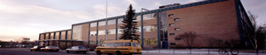

About us
William Aberhart High School is a comprehensive high school offering English, Spanish Bilingual and French Immersion programs located in the northwest community of Banff Trail, near the University of Calgary.
About the School
The school was built in 1957 and is situated on 10.2 acres. The school has 54 classrooms, 2 gymnasia, a fully equipped Fitness Centre available for classes and student memberships, a multi-media library resource centre, and specialized areas for music, drama, and art.
School Mission
Our role is to provide an environment which enables students to grow as caring, autonomous, lifelong learners, able and willing to participate effectively and responsibly in society.
Unique Points
- Advanced Placement program - Biology, Computer Science,Chemistry, Physics, Science, English, Political Science, Mathematics, French Literature
- Trilingual (English, French Immersion, Spanish Bilingual)
- Second languages - French and Spanish
- CTS - Technical and Business courses
- Learning Strategies and ESL support for all grades
- International Students
- Extensive extra-curricular program